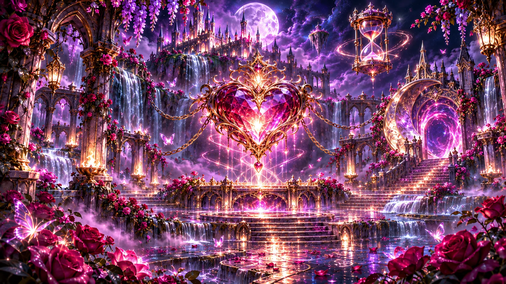

RAYAN'S DARK FORESTTHE LAST HEARTKEEPER
THE FORGOTTEN KINGDOM
The Last Heartkeeper
Beyond the final door lies the kingdom that has been waiting for you. Its heart is chained. Its magic is fading. Only one Heartkeeper can set it free.